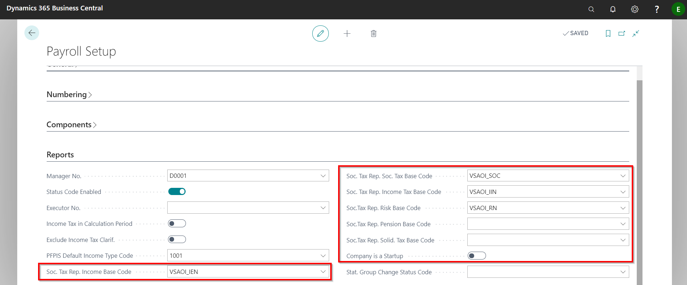
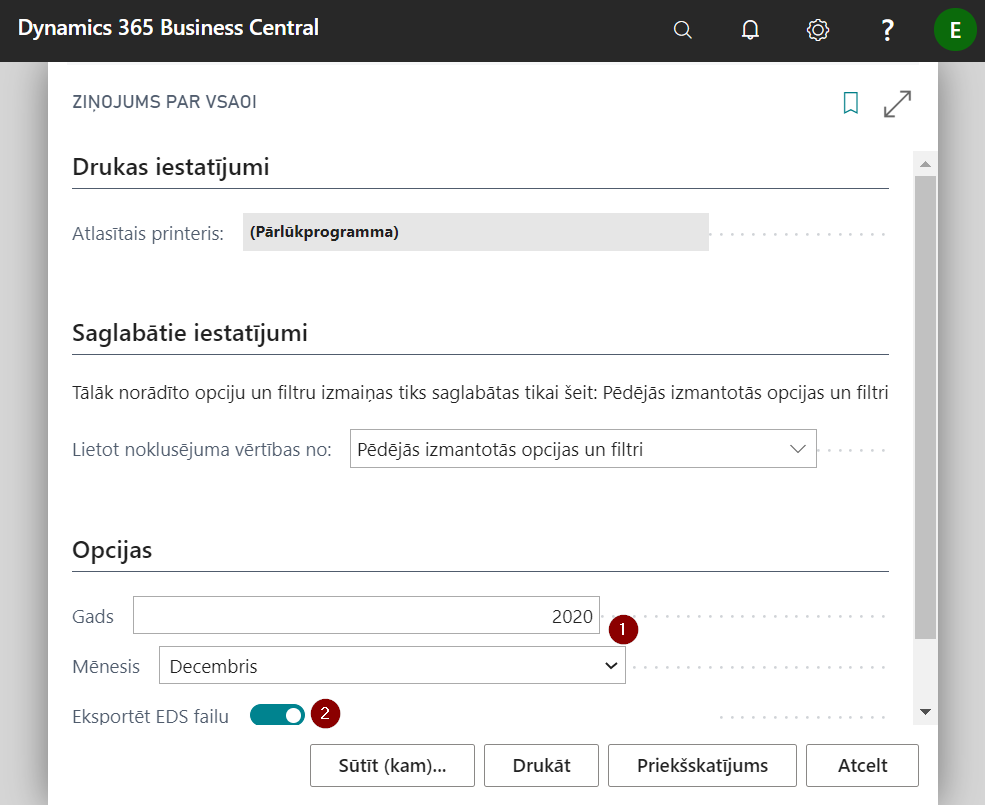
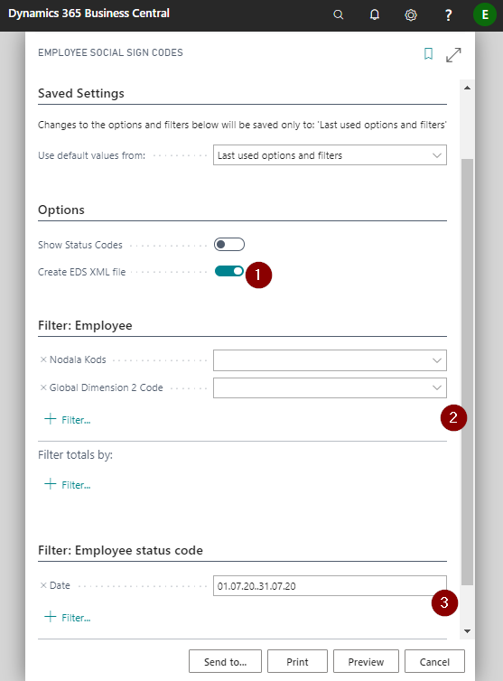
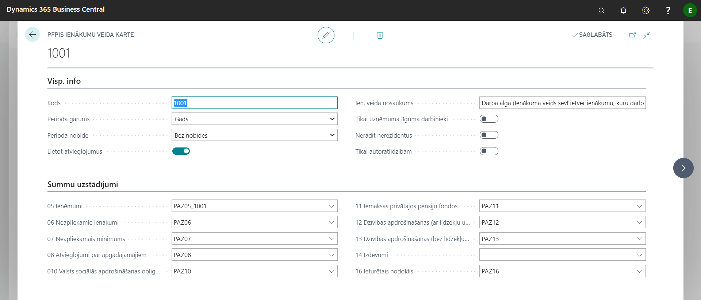
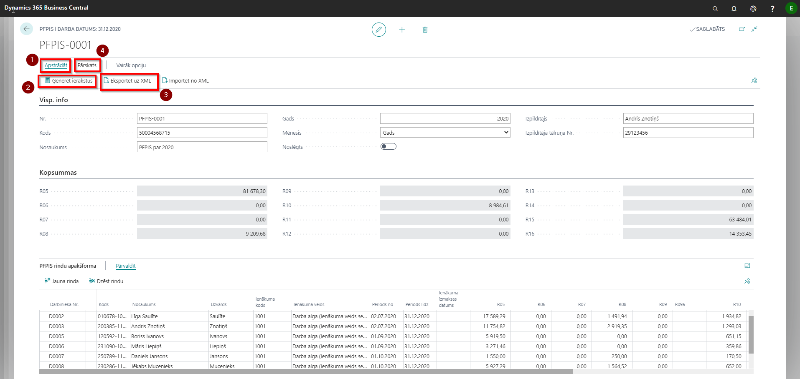

EDS reports
VSAOI report
Setup
Reported data settings are available in Payroll Setup tab Reports, for what a detailed description of the fields is available in the chapter Payroll setup.

Preparing
In order to prepare the report VSAOI report, in the report's print window, select the period for which you want to run a report ( ) and enable Export EDS File (
) and enable Export EDS File ( ), if you want to prepare also a file for upload to the EDS system.
), if you want to prepare also a file for upload to the EDS system.

Employee Social Sign code
To prepare Employee Social Sign code report, in the print window, enable the button to prepare an export file (), if necessary, specific filter selection criteria should be set in the filter () and, if necessary, indicate the period ( ) for which a report needs to be prepared.
) for which a report needs to be prepared.

PFPIS List
Setup
In the list PFPIS easing are listed codes, which divides the PFPIS report by the reliefs applied. Codes and names must be entered in accordance with the State Revenue Service's methodological materials.
The settings for the data displayed in the report are available in the register PFPIS Income types. In the register are listed income type cards, defined in accordance with the State Revenue Service's methodological materials.

Tab: General Info
| Field name | Description |
|---|---|
| Code | Income type code from SRS methodological materials. |
| Period Length | Year or month. |
| Period Shift | Indicate whether there is a shift if the payout differs from the calculation period: No shift; -1M (for example, in the list of PFPIS for August will show the income calculated for individuals for July); -2M |
| . | |
| Use Easing | If enabled, it indicates that you want to use reliefs for the particular code. |
| Income Type Name | The title is entered in accordance with the SRS methodological materials. |
| Only Company contract | If enabled, only employees of company contracts are included in the relevant code |
| Skip Non-Residents | If enabled, non-residents will not be displayed. |
| Only Royalty | Only royalties will be shown. |
Tab: Amount Setup
Bases are indicated in the relevant fields, which will calculate the value of the corresponding fields in the report.
Preparing
A new document ( or as it is called - buffer) must be created to create a statement of amounts paid to individuals in the list PFPIS Headers.
PFPIS buffer consists of 3 parts – General Info, Totals, PFPIS Line ListPart.
To prepare buffer, fill in the tab's General Info fields and click on the buttons Process () - Generate Records ().
If in field Month is selected a Year, then report will be made for an active employees as of December 31. If the month is specified in this field, report will be made of terminated employees.
Once the data in the buffer has been generated and checked, you can prepare the export file for submission to EDS by clicking the button Export to XML ().
Before submitting to EDS, the report can be printed and checked by clicking on the buttons on the toolbar Report - Print Overview or Print Employee.

Tab General Info
| Field name | Description |
|---|---|
| No. | PFPIS document number. Fills in automatically. |
| Code | Company registration number, filled in automatically from Company information. |
| Description | Document description. |
| Year | Buffer year. |
| Month | Selects the month the buffer was created from the list. If report of termination is prepared, select the month in which the employees were terminated. If an annual statement is required for all employees, then select Year from the list. |
| Closed | Indication that the buffer has been submitted to the EDS and closed. |
| Responsible Person | Name and surname of the responsible person. |
| Phone No. | Phone number of the responsible person. |
Tab: Totals
R05..R16 – The totals of the buffer lines value fields.
Tab: PFPIS Line ListPart
Buffer lines are generated automatically when the function Generate Records is run. Various filters provided by the records generation window can be used to prepare the buffer.
IINNR List
To create a new report The amounts disbursed to the notice of a non-resident, a new document need to be created in the IINNR Headers by clicking on a button New. Fill in the required information and prepare the file for export to the EDS system.
Tip
To prepare the report export file, the system may require you to fill in the Company information fields Phone No. un Email.